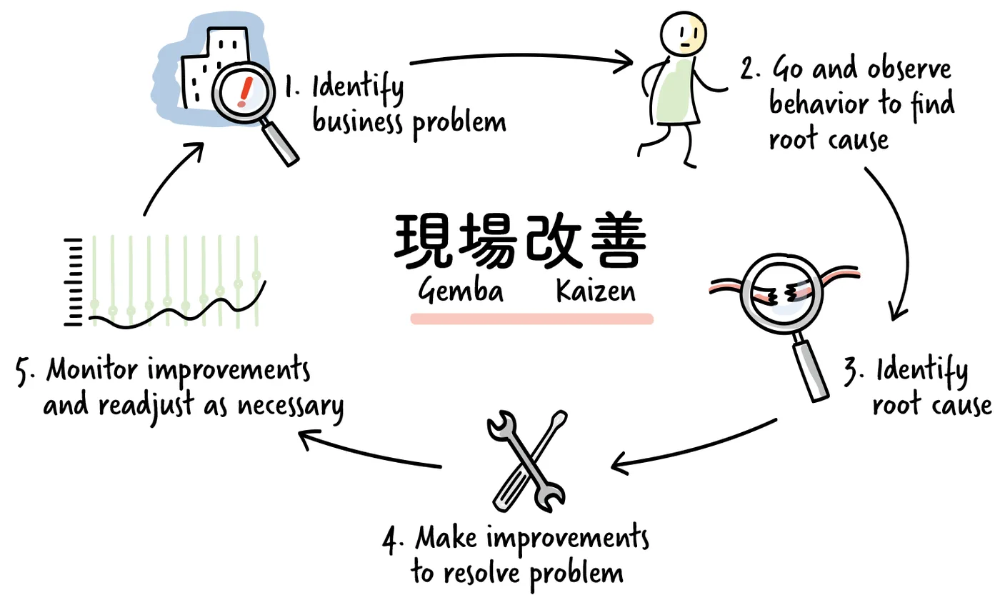

Why observation matters
Making observations is a crucial activity for coaches, leaders and managers. Observations help us understand what is happening and find ways to improve.
The Gemba Walk

The Gemba Walk is a continuous improvement practice from Lean management, in which observing in person and in real time is a core principle. Its purpose is to let managers and leaders see the actual work, engage with the people doing it, learn about the process and explore opportunities for improvement. Only by observing with our own senses can we correctly identify what is happening. The Gemba Walk also emphasises observing work where it actually happens, to learn about the work environment and the relationships in it by interacting with the people and processes involved.
Coaches can follow the same principles. We need to stay aware that our presence alone influences the system, which requires self-awareness, social awareness and, at times, restraint. It is usually better not to share your observations immediately, but to let group dynamics follow their natural course, even when a group seems to drift away from its task. People may find their way back on their own, and that becomes a longer-lasting learning experience.
What to observe
The goal of observation is to describe and explain what is happening around us. There are two main points of focus, which interact and sometimes overlap. First, we observe objective facts about everything that is happening.
Taiichi Ohno, founder of the Toyota Production System, compared gathering facts to a forensic scientist investigating a crime scene, building a clear picture of what happened. Data, by contrast, is a step removed from the process. Ohno wrote: "Data is of course important in manufacturing, but I place the greatest emphasis on facts." Second, the facts we collect lead to interpretations and to patterns, in which we record the dynamics and interactions between people, processes and the environment.
Observing with questions
Coach Lyssa Adkins suggests keeping a running list of questions in your head while you observe a team, whether the whole team or a few members are interacting. Questions like these help you focus on the quality of the interactions:
- Is everyone who wants to talk getting airtime? Are there quiet voices that want to be heard?
- Is the team moving towards its goal in an efficient and effective way?
- Is the team getting tired? Do people seem overloaded?
- How does the behaviour of individuals affect others in the team?
- Is there tension between team members? Is there energy in the room?
- Are they taking on as much as they could, or do they still have some slack?
- Are they stuck? Do they need a new perspective that opens up more possibilities?
Keep your list at hand and add questions that are relevant to your context.
Reinforcing and deepening observations
Observations are not for keeping to ourselves. They are valuable feedback and a fresh perspective for the people we observe. At some point we share them, to move towards goals and improvements. Lyssa Adkins distinguishes two kinds of observation to share.
Reinforcing observations highlight opportunities taken or missed, situations where improvement may be needed, or progress that has been made. They are direct feedback and give the person or team direction, for example "This was well done" or "You missed a chance here".
Deepening observations try to reveal underlying patterns or dynamics. They are not always accurate and mainly serve to encourage reflection and open a conversation. So do not become attached to your deepening observations or to their being right. They might be worded like this: "Here is what I thought I saw. What did you see?"
Observation as a coaching tool
Observation is a skill you will keep refining and adapting. Your observations hold up a mirror, so that people can see things they may not notice while they are busy with the work. They open conversations that deepen your understanding of what guides a team. Being aware of your own biases, and staying humble and empathetic, gives your coaching a solid foundation.
Practice
Observation list. Write your own list of questions to observe a team with. For each question, note the assumption behind it and how, if at all, you would share what you observe.
Timeline. During a team meeting, draw a horizontal line on a sheet of paper and note observations of behaviour in the order they happen: behaviour that helps the team reach its goal above the line, behaviour that hinders it below, and neutral observations on the line. Afterwards, ask yourself: What surprises you? Which patterns appear? What might have triggered certain behaviour? Then share three helpful behaviours with the team and make one concrete suggestion for improvement.
Field trip. In a busy place, such as a hotel lobby, an office or a station, observe the whole environment. Where is the energy? Which groups can you see, and what unites them? Who talks to whom? What conclusions do you draw, and which assumptions are you making?
Further reading
- Liker, J.: The Toyota Way. The management principles behind the Toyota Production System, including going to see the work where it happens.
- Ohno, T.: Toyota Production System: Beyond Large-Scale Production. Ohno's own account, including his emphasis on facts over data.